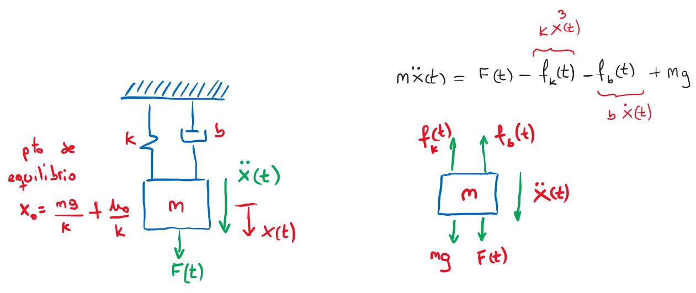
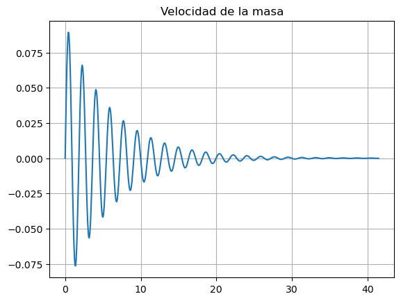
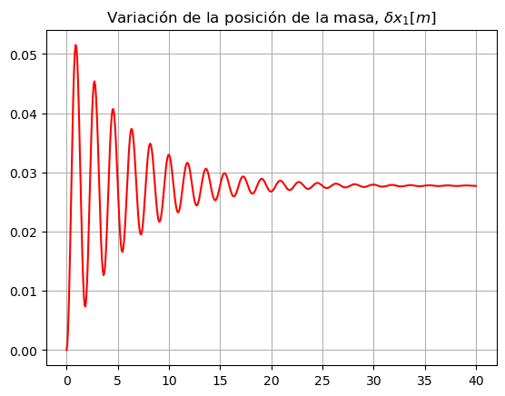
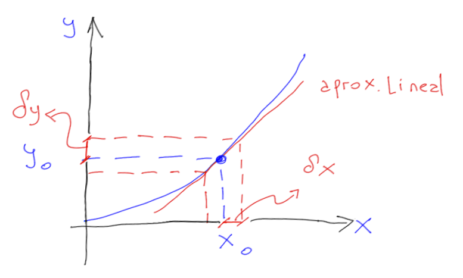

Linealización de sistemas no-lineales#
Definiciones#
Definimos un sistema SISO no-lineal con el par \((\boldsymbol{f},g)\) de la forma:
esto es la generalización de sistemas SISO vistos con anterioridad.
Punto de equilibrio#
El punto de equilibrio para el sistema \((\boldsymbol{f},g)\) es \(\vec{x_0}, u_0\) con lo que \(\boldsymbol{f}(\vec{x_0},u_0)=0\).
Linealización en variables de estado (Jacobiano)#
Por definición sea el sistema SISO no-lineal \((\boldsymbol{f},g)\) y dado \((\vec{x_0},u_0)\) un el punto de equilibrio del sistema. La linealización del sistema en \((\vec{x_0},u_0)\) es el sistema SISO lineal:
Donde todas las derivadas parciales son evaluadas en el punto \((\vec{x_0},u_0)\).
Ejemplo #1: Sistema masa-resorte-amortiguador - linealización Jacobiano#
En este caso consideraremos que el resorte no cumple con la ley de Hooke (\(f_k=kx\)), sino que la fuerza del resorte sera de la forma \(f_k=kx^3\),
{kind=link}

además consideraremos que \(x_1=x\) y \(x_2=\dot{x}=\dot{x_1}\), entonces el sistema no-lineal será de la forma:
entonces con \(\vec{x_0}=\{x_{10},x_{20}\},u_0\) un punto de equilibrio del sistema \(x_{10}=\pm \sqrt[3]{\frac{1}{k}u_0+mg}\), el sistema linealizado en dicho punto es:
En el caso que la salida del sistema sea la velocidad de la masa, tendremos que \(g(\vec x, u)= \dot{x}= x_2\) por lo que:
Simulación#
En primer lugar hallaremos el punto de equilibrio donde \(\dot{x_2}=\dot{x_1}=x_2=0\) y la entrada \(u=0\)
import control as ctrl
import matplotlib.pyplot as plt
import numpy as np
#uso los mismos parametros que se usaron en resorte_no_lineal.ipynb
b = 1 #[kg/s]
m = 3 #[kg]
k = 2 #[kg/s^2]
g = 9.81 #[m/s^2]
x_10 = np.power(m*g/k,1/3)
x_20 = 0
u_0 = 0
print(r"posición equilibrio, x_10 =", x_10, " [m]")
posición equilibrio, x_10 = 2.450492751091135 [m]
A=[[0,1],[-3*k*x_10**2/m,-b/m]]
B=[[ 0 ],[1/m]]
C=[0,1]
D=0
mra_vel_ss = ctrl.StateSpace(A,B,C,D)
mra_vel_ss
t,y=ctrl.step_response(mra_vel_ss)
plt.figure()
plt.plot(t,y)
plt.title('Velocidad de la masa')
plt.grid()

Ahora consideraremos que la salida del sistema es la posición de la masa \(y=x=x_1\) por lo que:
C=[1,0]
mra_pos_ss=ctrl.StateSpace(A,B,C,D)
t=np.linspace(0,40,500)
t,y=ctrl.step_response(mra_pos_ss,T=t)
plt.figure()
plt.plot(t,y,'r')
plt.title(r'Variación de la posición de la masa, $\delta x_1 [m]$')
plt.grid()

Linealización por expansión polinómica en series de Taylor#
si tenemos que \(y=f(x)\) una función con una única variable \(x\) y \((x_0,u_0)\) es un punto de equilibro del sistema, entonces la expansión de Taylor de la función \(y\) será:

Considerando pequeñas variaciones en las proximidades del punto de equilibrio, es decir, \(\delta x = x - x_0\) se produciran pequeñas variaciones en la salida, de la forma \(\delta y=y-y_0\), donde \(y_0=f(x_0)\) tendremos:
Lo anterior se puede ampliar para el caso de 2 variables de la siguiente manera \(y=f(x_1,x_2)\), con \((x_{10},x_{20},u_0)\) como un punto de equilibrio para el sistema, entonces tendremos que la aproximación por Taylor será:
Ejemplo #2: Sistema masa-resorte-amortiguador - Linealización Taylor#
Partiendo de la ecuación del sistema no lineal, haremos una aproximación por Taylor
en el punto de equilibrio:
entonces
luego, como \(\delta y=\delta\ddot{x}\) la ecuación linealizada es
Ejemplo #3: Sistema masa-resorte-amortiguador - cambio de variables#
En este caso vamos a hacer un cambio de variables para obtener el modelo linal perturbativo, de esta forma «siendo prolijos con las cuentas» obtendremos un modelo lineal. Partiremos de:
donde las variaciones al rededor de \(x_0\) deben ser pequeñas, es decir \(\delta x \simeq 0\). Nuevamente el punto de equilibrio es:
entonces reemplazando tenemos que:
haciendo más cuentas!!!… obtenemos: $\( \delta F +F_0 + mg = m~ \frac{d^2(\delta x)}{dt^2}+b~\frac{d(\delta x)}{dt} + k~ (\underbrace{{\delta x}^3}_{\simeq 0} +3~\delta x~{x_0}^2+3~x_0~\underbrace{{\delta x}^2}_{\simeq 0}+{x_0}^3) \)$
y finalmente llegamos al igual que en el ejemplo anterior a la ecuación diferencial linealizada: